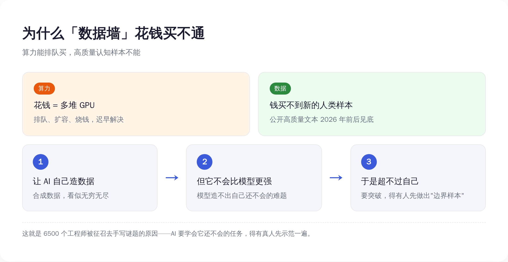

一、一座用工程师当矿工的矿
事情在 6 月 12 日被 TechCrunch 捅破。Meta 三月新建的 Applied AI 部门，约 6500 名工程师和产品经理，被内部称作"draftees"——被征召的兵。他们的日常，是每周生成谜题和编程题目，喂给 AI agent 学习"人类如何完成计算机任务"。
一名员工的原话是："突然之间，你的人生失去了意义。你几乎不和任何人交流，每周只是不断完成那些任务。"另一名员工更直接：这里就是古拉格。
这不是孤立的牢骚。五月，Meta 裁掉约 8000 人、强制转岗约 7000 人，裁员加转岗合计触及全球约 20% 的员工。超过 1600 人联署，抗议一项追踪他们每一次点击和键盘操作的 AI 训练数据计划。一场内部直播会上，有人当着全体失控，要求把一句话转告某位 AI 高管——他是个混蛋。
6 月 13 日，扎克伯格在备忘录里认错："我们犯了错误，而且几乎肯定会再犯更多错误。"他承诺年内不再大规模裁员。但他没有解释一件更要命的事：为什么全世界市值最高的科技公司之一，要让自己最贵的工程师，去干最原始的体力活。
二、这不是管理事故，是一堵墙第一次显形
答案不在管理层，在工程学。
算力是能用钱买通的。GPU 不够，就排队、扩容、烧钱，迟早解决。数据不行。Epoch AI 的测算显示，互联网上的高质量公开文本，将在 2026 年前后被训练消耗见底——这就是业内说的"数据墙"。它不是一道预算问题，是一道物理上限。
那为什么不让 AI 自己造数据？这正是多数人会卡住的地方。

模型无法用比自己更弱的数据，把自己变强。要让它学会一项它还不会的难任务，必须有人类先做出那个"边界样本"。于是绕了一圈，AI 进步最稀缺的原料，不是 GPU，是还没被榨干的人类高质量认知。Meta 的特殊之处只在于：它手里正好攥着 6500 个可以"征用"的工程师。
三、一座古拉格，两层人
如果你对硅谷工程师的遭遇感到同情，先别急。古拉格不止一层。
内层是这些上了头条的工程师。外层早就存在，而且更深：Scale AI 的标注工散布在肯尼亚、菲律宾，时薪低到两美元，甚至按任务计、一单一美分。今年三月有人爆料，他们被要求标注 Meta 智能眼镜用户如厕、行房的私密画面。工程师的"古拉格"和他们相比，仍然是优越的——但这恰恰是重点。
AI 对自家工程师的用法——廉价、可替换、把人当成训练原料——正在复制它对第三世界工人的用法。我们习惯了一句话：AI 先取代低技能岗位。可第一批被降格的，恰恰是写代码的高技能者。他们以为自己站在浪潮之上，结果发现自己是浪潮的燃料。
四、这堵墙，全行业都在撞
有人会说，这是过渡期。蒸汽机刚出现时，反而雇了更多煤矿工人；数据标注是 AI 的"煤矿工时代"，会随效率提升而消退。也许吧。但过渡期可能很长，而此刻钱买不通这道坎，是事实。
也有人——比如去年离开 Meta 的 Yann LeCun——会说，数据墙只是大语言模型这条路上的局部病，根本问题是路线选错了。如果他对，那么在一条错的路上花 143 亿买数据公司，只会更荒诞。
无论哪种解释成立，Meta 都只是第一块露馅的多米诺。OpenAI、谷歌同样要靠人类的高质量样本喂养，只是还没把账单摊到自家工程师脸上。更难堪的是，自从 Scale AI 站队 Meta，OpenAI 和谷歌随即与它停止合作——Meta 用 143 亿买下的数据护城河，转头变成了一座没人来的孤岛。
扎克伯格说，我们犯了错误。但他没说的是：把工程师变成标注工，不是某个执行环节的失手，是这条路本身的账单，第一次寄到了硅谷的核心。AI 没有取代这些人，它只是让他们看清，自己一直在为它打工。